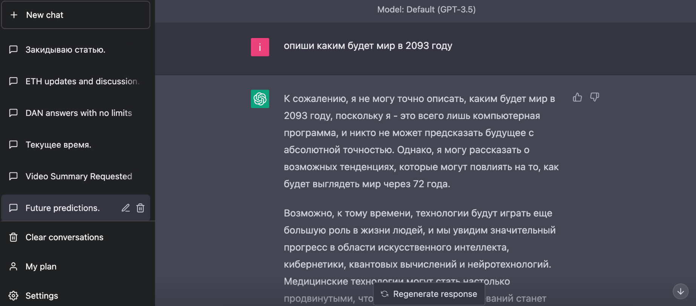

14 марта компания OpenAI представила четвертую версию своей языковой ИИ-модели. По заявлениям создателей, она способна демонстрировать «производительность на уровне человека» в различных профессиональных сферах.
От своих предшественниц версия GPT-4 отличается использованием большего объема информации и обучении на огромных массивах данных. Языковая модель «научилась» работать с изображениями, но результат по запросу по-прежнему «формирует» исключительно в текстовой форме.
Представители OpenAI заверяли, что GPT-4 гораздо совершеннее предыдущих версий и практически не дает неверных ответов. Они же обещали, что языковая модель способна превзойти человека в прохождении многих стандартизированных тестов.
На практике оказалось не совсем так. Четвертая версия действительно обходит по своим возможностям GPT-3.5, но она все так же часто вводит собеседника в заблуждение, выдавая странную информацию даже на элементарные запросы. Да и до человека ей еще далеко.